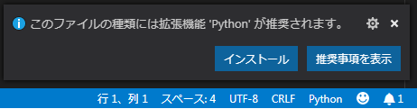
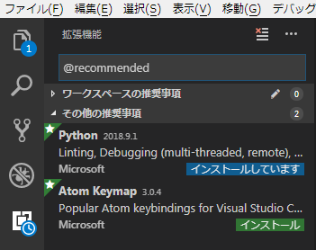
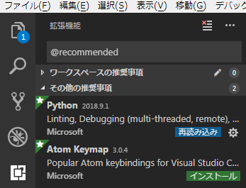
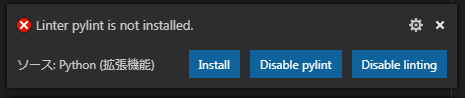
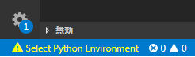
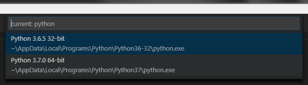
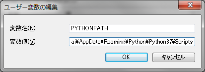

インストーラを実行するだけ
コマンドプロンプトを開いて py 。Pythonターミナルが起動する
起動したPythonターミナル内で、以下を入力する
import sys
sys.path
Pythonのインストール場所情報が出力される
以下のように沢山場所が表示されるけれど、～python\\python37迄は共通のハズ。
これをメモしておく。
['', 'C:\\Users\\<username>\\AppData\\Local\\Programs\\Python\\Python37\\python37.zip', 'C:\\Users\\<username>\\AppData\\Local\\
Programs\\Python\\Python37\\DLLs', 'C:\\Users\\<username>\\AppData\\Local\\Programs\\Python\\Python37\\lib', 'C:\\Users\\<username>\\
AppData\\Local\\Programs\\Python\\Python37', 'C:\\Users\\<username>\\AppData\\Local\\Programs\\Python\\Python37\\lib\\s
ite-packages']
VS Code 用拡張機能 "Python" をインストールするVS Code を起動する。
適当なファイルを新規作成して、～.py の拡張子で保存する。
すると画面右下に、以下のポップアップが出現する。

インストール をクリック。
サイドバーに拡張機能が表示され、以下画面のように Python の項目が インストールしています になる。

インストールが完了すると、インストールしています から 再読込み に変化する。

再読込み をクリック。
Pylintをインストールする<!Caution!>
PCがプロキシ環境下の場合は以下を確認します。
VS Code 内の Settings.json で、以下のようなプロキシ設定がされている事を確認します。
"http.proxy": "http://<ProxyID>:<ProxyPassword>@<ProxyURI>:<PortNo>",
"http.proxyStrictSSL": false
</!Caution!>
VS Code 用拡張機能Pythonのインストールが完了して再読込みすると、
画面右下に以下のポップアップが出現する。

Install をクリック。
画面左下に以下警告が表示されることがある。

警告をクリックすると、画面上部に以下選択肢が表示される。

Pythonインストールにメモしたディレクトリの方の python.exe を選択する。
もう1度画面右下に Linter pylint is not installed. が表示されるので、Install をクリックする。
ターミナルが起動し、Pylintをインストールするコマンドが実行される。
以下は実行結果例。
C:\Users\<username>\Desktop\test>C:/Users/<username>/AppData/Local/Programs/Python/Python37/python.exe -m pip install -U pylint --user
Collecting pylint
Downloading https://files.pythonhosted.org/packages/6e/c2/1e97c238877b6a86562d32297eb33a6670b6220e8ec0ca85f67b66dc893f/pylint-2.1.1-py3-none-any.whl (737kB)
100% |████████████████████████████████| 747kB 867kB/s
Collecting colorama; sys_platform == "win32" (from pylint)
Downloading https://files.pythonhosted.org/packages/0a/93/6e8289231675d561d476d656c2ee3a868c1cca207e16c118d4503b25e2bf/colorama-0.4.0-py2.py3-none-any.whl
Collecting astroid>=2.0.0 (from pylint)
Downloading https://files.pythonhosted.org/packages/19/92/6f6d3591c429dbdb31c18d8476ba1af08d5973d7cc09f66346109e9de7fb/astroid-2.0.4-py3-none-any.whl (172kB)
100% |████████████████████████████████| 174kB 745kB/s
Collecting isort>=4.2.5 (from pylint)
Downloading https://files.pythonhosted.org/packages/1f/2c/22eee714d7199ae0464beda6ad5fedec8fee6a2f7ffd1e8f1840928fe318/isort-4.3.4-py3-none-any.whl (45kB)
100% |████████████████████████████████| 51kB 707kB/s
Collecting mccabe (from pylint)
Downloading https://files.pythonhosted.org/packages/87/89/479dc97e18549e21354893e4ee4ef36db1d237534982482c3681ee6e7b57/mccabe-0.6.1-py2.py3-none-any.whl
Collecting wrapt (from astroid>=2.0.0->pylint)
Downloading https://files.pythonhosted.org/packages/a0/47/66897906448185fcb77fc3c2b1bc20ed0ecca81a0f2f88eda3fc5a34fc3d/wrapt-1.10.11.tar.gz
Collecting lazy-object-proxy (from astroid>=2.0.0->pylint)
Downloading https://files.pythonhosted.org/packages/55/08/23c0753599bdec1aec273e322f277c4e875150325f565017f6280549f554/lazy-object-proxy-1.3.1.tar.gz
Collecting six (from astroid>=2.0.0->pylint)
Downloading https://files.pythonhosted.org/packages/67/4b/141a581104b1f6397bfa78ac9d43d8ad29a7ca43ea90a2d863fe3056e86a/six-1.11.0-py2.py3-none-any.whl
Installing collected packages: colorama, wrapt, lazy-object-proxy, six, astroid, isort, mccabe, pylint
Running setup.py install for wrapt ... done
Running setup.py install for lazy-object-proxy ... done
The script isort.exe is installed in 'C:\Users\<username>\AppData\Roaming\Python\Python37\Scripts' which is not on PATH.
Consider adding this directory to PATH or, if you prefer to suppress this warning, use --no-warn-script-location.
The scripts epylint.exe, pylint.exe, pyreverse.exe and symilar.exe are installed in 'C:\Users\<username>\AppData\Roaming\Python\Python37\Scripts' which is not on PATH.
Consider adding this directory to PATH or, if you prefer to suppress this warning, use --no-warn-script-location.
Successfully installed astroid-2.0.4 colorama-0.4.0 isort-4.3.4 lazy-object-proxy-1.3.1 mccabe-0.6.1 pylint-2.1.1 six-1.11.0 wrapt-1.10.11
You are using pip version 10.0.1, however version 18.1 is available.
You should consider upgrading via the 'python -m pip install --upgrade pip' command.
警告 which is not on PATH が発生した場合は、以下の方法で Path を追加する。
Winの場合、
[マイコンピューターを右クリック]→[プロパティ]→[詳細設定]→[環境変数]
のところで、 変数 PYTHONPATH を編集する。(変数 PYTHONPATH が存在しなければ、追加する。)
以下が例。変数値(V): に、警告で言われた、
C:\Users\<username>\AppData\Roaming\Python\Python37\Scripts を設定している。

コマンドプロンプト(VS Codeのターミナルでもいい)で、pip install <package_name> を実行する。
以下は lxml をインストールする例。
py -m pip install lxml
PCがプロキシ環境下の場合は以下のコマンド。
py -m pip install lxml --proxy=<ProxyID>:<ProxyPassword>@<ProxyURI>:<PortNo>